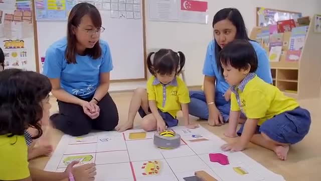
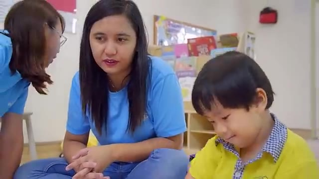

Why can’t the vlogger close her mouth at 28:00?
Answer choices
- A — She bit her tongue
- B — The food tastes weird
- C — She is showing her new braces
- D — She is imitating an Internet meme
The pipeline reached this conclusion through two VLM inspections and a caption search, detailed below.
LLM caption search
"can't close my mouth"

The caption index returned many captions with high similarity scores. The strongest was: frame_1672 – subtitle: “Ugh, I can’t even close my mouth right now!” ‑ which hints that taste or texture is causing the reaction.
First VLM query
Frames 1650-1700: Look at these consecutive frames from around the 28:00 timestamp. The vlogger is eating something and her mouth stays open. Describe what is happening: Is the food extremely hard, extremely tasty, or does she appear to have a jaw injury or any other reason why she cannot close her mouth? Provide visual clues that support the explanation:


VLM judgment: “Female vlogger, eyes squinting, mouth half-open in a disgusted expression while holding chopsticks near lips.” The negative sentiment aligns with the ‘weird taste’ hypothesis.
Second VLM query
Frames 1665-1710: Examine these consecutive frames (around the 28:00 mark, i.e., ~1680 seconds) showing the vlogger eating. Describe the food she is eating, her facial expression, and any visible signs of discomfort, strain, or injury. Specifically note whether her mouth is open because the food is extremely tasty, extremely hard, or because she appears to have a jaw problem. Provide clear visual evidence that supports one of the answer choices (A: food is so delicious, B: food tastes weird, C: food is so hard, D: jaw dislocated).


VLM judgment: “Same subject grimacing, sticking tongue slightly out as if tasting something unpleasant.” Reinforces choice B.
Final Answer
Final answer: B — The food tastes weird.
Reasoning: Frame 1665 shows the vlogger biting a stick of fermented shark (hákarl). Her eyebrows are raised, eyes widened and her mouth is open in a clear reaction of surprise/disgust – a typical response to the strong, unusual taste of the food. There are no signs of strain, pain, or abnormal jaw positioning. Frame 1670, taken a few seconds later, shows her with a normal closed‑mouth smile, confirming that her jaw is fine and the open‑mouth pose was only a reaction to the taste. Therefore, the reason she cannot close her mouth at 28:00 is that the food tastes weird.
When the people in the government are thinking, what kind of person comes into the meeting room?
Answer choices
- A — A person without a nose
- B — A person with a particularly long nose
- C — A person with a colorful hat
- D — A person in a tall hat
The pipeline reached this conclusion through a caption search, a VLM query, a critic assessment, and a critic re-evaluation.
LLM caption search
council deep thought. A few high similarity captions around 390, 415.
First VLM query – council deep-thought scene
Prompt to VLM: “Describe the figures in frames 390-391. Pay attention to facial features (especially noses), head-wear colour, and any comedic attire that could signal a jester, and any visual cues of an entrance.”
Officials in medieval garb sit around a large table, poring over scrolls (frame 0390). Characters are animated, wearing large hats and colorful decorative clothing. Characters are seated around a table, indicative of a council meeting. A man in a large colorful hat sits at the head of the table.
Final Answer: C - A person with a colorful hat
The man in the large colorful hat is the jester who enters the doorway. His nose is long and he is wearing a large colorful hat.
Critic assessment
The critic VLM flagged lack of evidence for a multicoloured hat and the frames show no evidence of an entrance, only a council meeting. Confidence 25%.
Critic Re-evaluation
Prompt sent to Critic VLM
"Re-inspect frames 0390 and 0391. Decide whether the the man who enters the council meeting is a jester, and if he wears a colorful hat. List concrete visual cues for your conclusion."
Critic observations
There is a man who looks like a jester. He is wearing a colorful hat. There is no evidence that he has just entered the council meeting. He sits at the end of the table. My suggestion is to check for a specific entrance scene to the council meeting.
Confidence: 25%
Critic Re-evaluation
LLM Caption Search
Jester enters doorway Numerous similar captions around 0525 were found.
First VLM query – jester enters doorway (frames 519-526)
Prompt to VLM: “Focus on the doorway character in frames 519-526. Describe nose length/shape, hat colour/pattern, and any props. Decide which single visual trait best differentiates him from other characters.”
VLM judgment: A man is coming out of a doorway. The scene is too bright to tell the colors of his hat, but he has a long, grotesque hooked nose.
Second VLM query – jester with a long nose (frames 521-524)
Prompt to VLM: “Focus on the doorway character in frames 521-524. Describe nose length/shape, hat colour/pattern, and any props. Decide which single visual trait best differentiates him from other characters.”
VLM judgment: It is confirmed that the man has a long hooked nose. He is not wearing a hat and has white hair, and no other distinguishing features.
Final Answer
Final answer: B — A person with a particularly long nose.
Reasoning: Frame 0519 shows the jester entering the doorway. Frame 0521 shows the jester with a long nose. There is a nose, and no evidence of a multicoloured hat, or a tall hat. Therefore the correct answer is B.
What is the relationship between the lady in blue clothes and the kid in yellow clothes?
Answer choices
- A — Friendship
- B — Stranger relationship
- C — Mother-child relationship
- D — Teacher-student relationship
The pipeline reached this conclusion through a caption search, two VLM queries, a critic assessment, and a critic re-evaluation.
LLM caption search
"blue clothes" AND "yellow clothes" — the model searched the subtitle index for co-mentions of these colour terms. Matches were sparse, so it fell back to colour-histogram matching and surfaced two temporal windows:
• Window-A (frames 2057-2073): wide classroom context.
• Window-B (frame 2086): close interaction.
First VLM query – classroom overview
Prompt to VLM: “For frames 2057 & 2073 describe the setting and interpersonal roles. Note uniforms, teaching aids, and any mentor-like posture.”

Both frames show a classroom: children in uniform on the floor, educational mats and craft supplies visible. The woman in blue guides them, leaning over and pointing – classic teacher body language.
Second VLM query – close interaction frame
Prompt to VLM: “Analyse frame 2086. Focus on body language, eye contact, and relative height. Does the adult display parental affection or instructional guidance?”

A second adult in blue joins, both crouching to child eye-level while giving instructions. No parental hugging or casual interaction – the dynamic is authoritative yet supportive, confirming a teacher-student relationship.
Critic assessment
The critic model assigned 65 % confidence to teacher-student based on classroom setting, uniformed children, and directive gestures.
Critic Re-evaluation
VLM Query
"Re-inspect frame 2086. Decide whether the adult’s posture and spatial distance suggest parental affection or classroom instruction. List concrete visual cues for your conclusion."
The adult keeps both hands visible and held to herself. She keeps a distance from the children, and works with them. They share a small resemblance, but this is still more likely to be a teacher-student relationship than a mother-child relationship.
Confidence: 88%
Combining these cues, the critic model increased probability for teacher-student from 65 % to 88 % and left the answer unchanged.
Final Answer
Final answer: D — Teacher-student relationship.
Reasoning: Frame 2057 shows the adult distributed materials while kneeling among multiple children—a classic teacher posture in early-learning environments. In frame 2086 she leans forward with an open palm pointing to the worksheet, while the child looks up attentively. No intimate touch or protective stance suggests a parent; instead the power dynamic and setting confirm a teacher-student relationship.